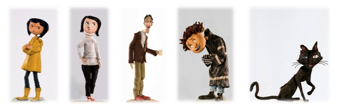

Es la protagonista de la película; es una chica rígida, fuerte de carácter y clara al hablar. Se muda a una casa compartida por otras personas llamada «El Palacio Rosa», junto a sus padres. Conoce a personas fuera de lo común que nunca la entienden y siempre confunden su nombre con «Caroline». Coraline es algo apartada debido a que sus padres siempre están ocupados como para prestarle atención, aparte de ser aventurera, es una chica de mucha energía y siempre quiere lograr que sus padres la entiendan aunque sin resultado alguno. Según los diseñadores de Coraline, era un gran error hacer personajes que tuvieran demasiada similitud con lo real por lo que la anatomía de Coraline es exagerada, más que todo en la cabeza y su cabello azul la que la diferencia al instante de muchos otros personajes.
Es la madre ocupada de Coraline; casi siempre se encuentra escribiendo un catálogo de plantas para su trabajo. Su esposo se dirige a ella como «la patrona» y dice estar demasiado ocupada como para darle a Coraline la atención que necesita. Ella prefiere no estar al aire libre, ya que odia la suciedad y la tierra. Es educada pero no tiene buen humor. Odia que su esposo eructe. También le gustan los tulipanes.
La Otra Madre también conocida como Beldam es una criatura de origen desconocido, es la principal antagonista de la historia y vive en un mundo paralelo al de Coraline cruzando por una pequeña puerta en la Sala de Estar, llamado el «Otro mundo». Se gana el amor de Coraline dándole cosas y un mundo donde todo es a su gusto. Su verdadera forma da una figura que tiene similitud a una araña, con una cara huesuda, manos hechas por agujas y camina sobre cuatro patas afiladas. Ha secuestrado personas a través del tiempo para comer su vitalidad, por lo que siempre secuestra personas que son hiperactivas (por lo menos para sus padres). Ella es capaz de transformarse (como lo hace al tomar la forma exacta de la madre de Coraline cuando ella busca a sus padres) y conforme se debilita adopta su verdadera forma.
Charlie Jones Es el padre de Coraline, quien está igualmente ocupado debido a que también trabaja en el catálogo. Cocina horrible, tan horrible que Coraline dice que la va a envenenar. Le presta un poco más de atención a la hija que la madre pero casi nada. Le gusta la jardinería igual que a Coraline. En la película llevaba un fuerte resfriado y sarpullido.
El otro padre es una criatura hecha por la Otra Madre para engañar a Coraline. Es un gran pianista debido a unas manos mecánicas que «lo manejan», también canta y al mismo tiempo es el esclavo de la «Otra Madre», mostrando una actitud nerviosa y traumante. Su verdadera forma es una patética criatura con cuerpo de calabaza quien es designado para ser el primer obstáculo de Coraline, ya que le dio demasiada información. Cuando revela toda la información de «La Otra Madre», ella decide usar las manos mecánicas para obligarlo a manejar su Mantis-Robot que usaba para regar el jardín, con el objetivo de detener a Coraline. Durante la prueba, no desea lastimar a Coraline y en sus últimos momentos logra liberarse de las manos que lo estaban obligando a atacar a la chica y le entrega la esfera a Coraline (que era uno de los ojos de las personas) antes de que el puente se caiga y de desaparecer en el agua.
Wybie Lovat es un personaje que solo aparece en la película. Su nombre completo es Wyborn Lovat. Es nieto de la dueña del departamento en el que vive Coraline. Es un chico excéntrico pero amable con las otras personas como Coraline. Le gusta andar en su bicicleta, mientras lleva un casco con el dibujo de una calavera y unos visores telescópicos. Para Coraline, es un charlatán y un fastidioso por lo cual se burla de él. Su tía abuela fue secuestrada por la otra madre y fue su última víctima antes de Coraline.
El gato es un gato negro del mundo de Coraline, puede desaparecer y aparecer en cualquier lugar, es capaz de hablar en el otro mundo y es el principal guía y ayudante que tiene Coraline en ambos mundos para sobrevivir a las trampas de «Otra Madre». Es cuidado por Wybie y según él es un gato silvestre. La otra madre le tiene un profundo odio ya que él puede entrar y salir del «Otro Mundo» a su voluntad, debido a que la Otra Madre ha existido por cientos de años. Puede que sea más que solo un gato.
April Spink y Miriam Forcible son dos actrices inglesas retiradas. La señorita Spink es regordeta de pelo rosado y su particularidad es su gran trasero; mientras que Miriam es alta y al parecer con cintura pero su particularidad es su enorme busto. Ambas viven en el sótano rodeadas de perros. Ellas son de vital importancia porque advierten a Coraline sobre los peligros que ella corre mucho antes de que supiera lo que pasa en esa casa. April rompe uno de los tres bowls (el de 1921) que están llenos de confites viejos de Brighton en cuyo interior está «el caramelo del ojo» (su piedra de visión) y se lo da como obsequio diciéndole que con este objeto será capaz de ver cosas malas (según April) o cosas extraviadas (según Miriam) en el «Otro Mundo».
El señor Bobinski es un retirado gimnasta ruso que vive en la planta superior del Palacio Rosa y es uno de los vecinos de los Jones. Bobinski vive de una exigente dieta a base de remolachas, y desea entrenar una banda de «Mushkas» (como él les dice), ratones que aparentemente son capaces de comprender lo que él les dice y viceversa, y que en el filme cuentan lo que hay detrás de la puerta a Coraline. Bobinski pronuncia bien el nombre de Coraline. Para la mamá de Coraline, es alcohólico.